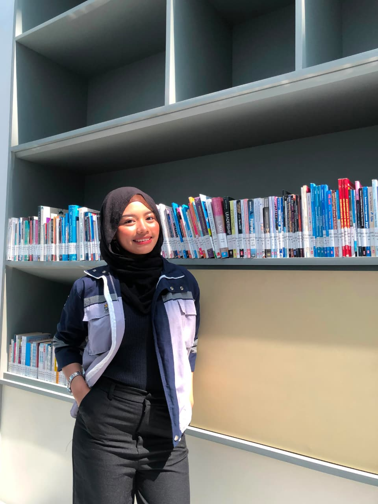
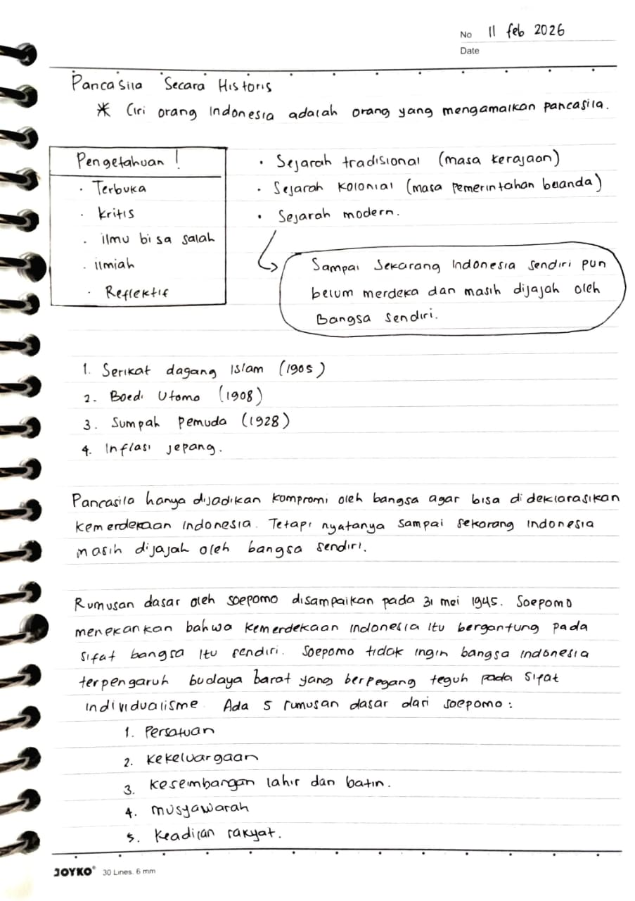
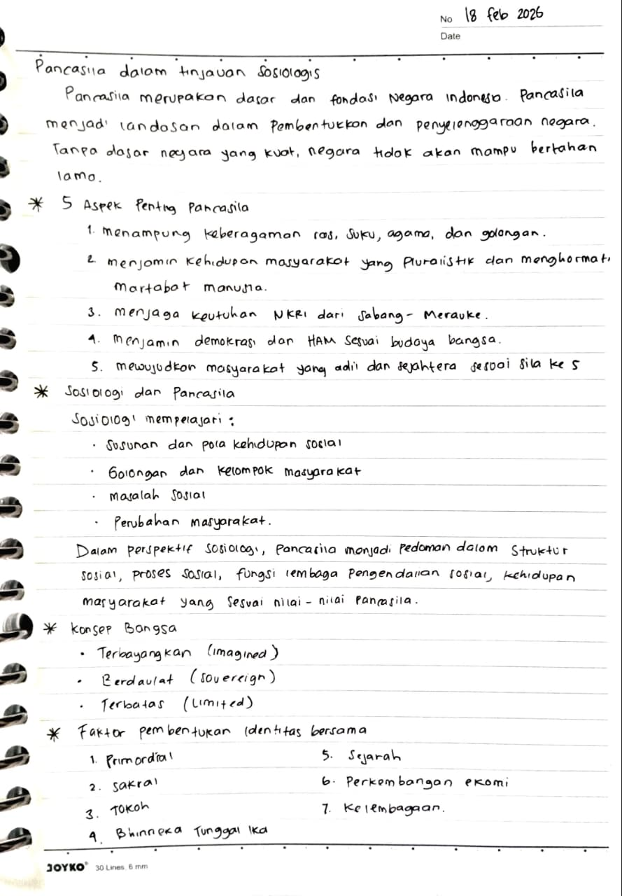
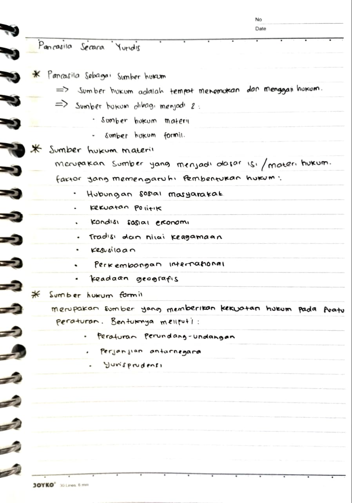
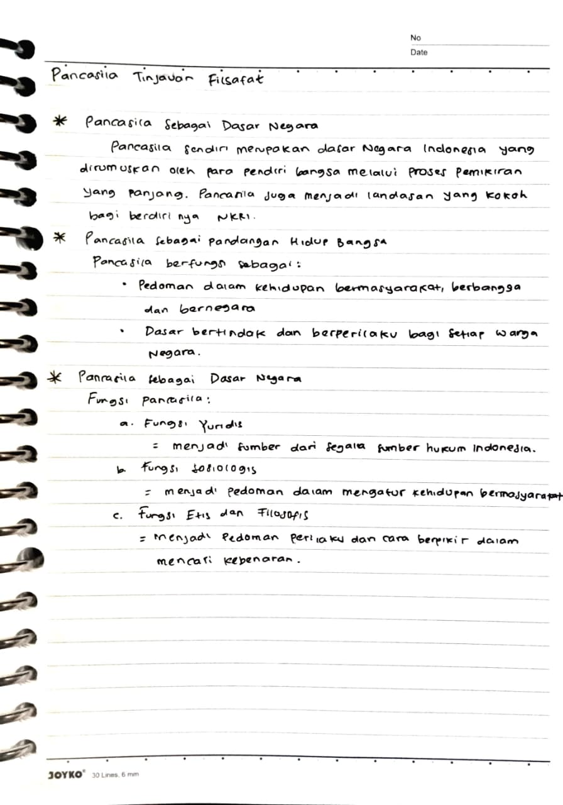
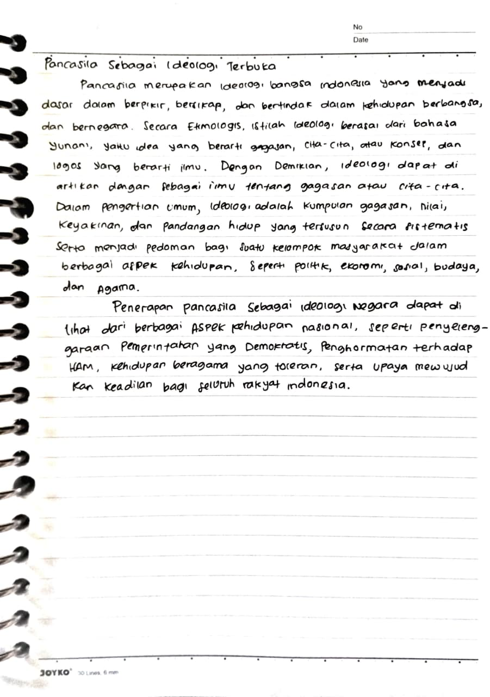
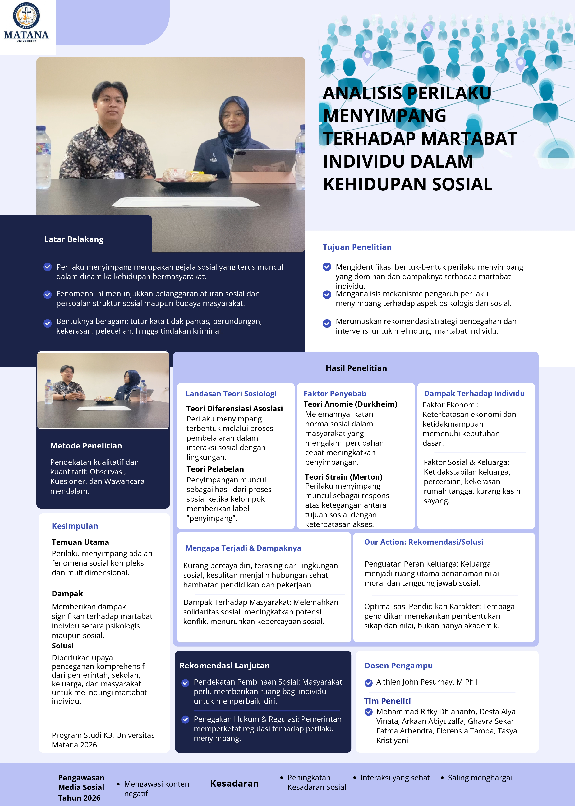

Mahasiswa Universitas Matana
Ghavra Sekar Fatma Arhendra — Mata Kuliah Kewarganegaraan.
Selamat datang di portofolio digital saya. Halaman ini mendokumentasikan proses pembelajaran saya dalam mata kuliah Kewarganegaraan. Di sini, saya menyajikan rangkuman modul mingguan, showcase karya, serta refleksi akhir yang mengaitkan nilai-nilai kebangsaan, hukum, dan etika dengan tanggung jawab saya sebagai calon profesional di bidang Keselamatan dan Kesehatan Kerja (K3).

Saya Ghavra Sekar Fatma Arhendra, seorang mahasiswi K3 yang saat ini sedang menempuh pendidikan di Universitas Matana. Melalui portofolio ini, saya ingin membagikan proses belajar, karya, serta refleksi saya dalam memahami nilai-nilai kebangsaan dan hukum yang berlaku di Indonesia.
Mata kuliah Kewarganegaraan dirancang untuk membangun kesadaran kritis mahasiswa terhadap nilai-nilai dasar kehidupan berbangsa. Fokus utamanya meliputi pemahaman mendalam tentang Pancasila, UUD 1945, serta identitas nasional. Melalui pembelajaran ini, mahasiswa diajak untuk memahami hak dan kewajiban mereka guna berkontribusi aktif dalam menjaga persatuan dan keutuhan NKRI.
Dokumentasi proses belajar setiap minggu.

Ringkasan: Secara historis, karakteristik manusia Indonesia ditandai dengan pengamalan Pancasila melalui pengetahuan yang terbuka, kritis, ilmiah, dan reflektif. Lini masa sejarah Indonesia sendiri bergerak dari era tradisional dan kolonial hingga masa modern yang dipicu gerakan nasional seperti Serikat Dagang Islam (1905), Budi Utomo (1908), dan Sumpah Pemuda (1928), meskipun terdapat kritik bahwa bangsa ini belum sepenuhnya merdeka dari "penjajahan" oleh bangsa sendiri karena Pancasila awalnya hadir sebagai kompromi politik demi deklarasi kemerdekaan. Sebagai fondasi tandingan terhadap individualisme barat, Soepomo dalam sidang BPUPKI tanggal 31 Mei 1945 kemudian merumuskan lima dasar negara yang digali dari kepribadian asli bangsa, yaitu persatuan, kekeluargaan, keseimbangan lahir dan batin, musyawarah, serta keadilan rakyat.
Refleksi Diri: Melalui pembelajaran materi Pancasila Secara Historis, saya menyadari bahwa memahami fondasi negara memerlukan pemikiran yang terbuka, kritis, dan reflektif. Menelusuri lini masa sejarah dari era tradisional hingga modern yang digerakkan oleh momentum seperti Serikat Dagang Islam, Budi Utomo, dan Sumpah Pemuda menyadarkan saya bahwa kemerdekaan adalah proses panjang yang harus terus dijaga. Materi ini juga memberi ruang bagi saya untuk berefleksi secara kritis bahwa tantangan terbesar bangsa saat ini adalah melepaskan diri dari 'penjajahan' oleh bangsa sendiri. Selain itu, pemikiran Soepomo pada sidang BPUPKI mengenai lima dasar negara mengajarkan saya pentingnya memegang teguh identitas asli bangsa, seperti rasa kekeluargaan dan musyawarah, sebagai perisai utama dalam menghadapi arus individualisme barat.

Ringkasan: Pancasila dalam Tinjauan Sosiologis menjelaskan Pancasila sebagai fondasi vital dalam pembentukan dan penyelenggaraan Negara Indonesia yang menjamin kehidupan masyarakat pluralistik, menjaga keutuhan NKRI, serta menegakkan demokrasi, HAM, dan keadilan sosial. Dalam perspektif sosiologi yang mempelajari struktur, kelompok, masalah, dan perubahan sosial Pancasila berfungsi sebagai pedoman utama pengendalian dan proses sosial yang selaras dengan nilai-nilai luhur bangsa. Pemahaman ini juga berkaitan dengan konsep bangsa yang bersifat terbayangkan (imagined), berdaulat (sovereign), dan terbatas (limited), di mana identitas bersama tersebut dibentuk oleh faktor-faktor krusial seperti primordial, sakral, tokoh, Bhinneka Tunggal Ika, sejarah, perkembangan ekonomi, serta kelembagaan.
Refleksi Diri:Melalui pembelajaran materi Pancasila dalam Tinjauan Sosiologis, saya menyadari bahwa Pancasila bukan sekadar teks hukum normatif, melainkan perekat sosial yang hidup di tengah realitas masyarakat Indonesia yang plural. Memahami sosiologi menyadarkan saya akan pentingnya Pancasila sebagai kompas dalam menyikapi berbagai masalah dan perubahan sosial yang terjadi di sekitar kita. Selain itu, refleksi mengenai konsep bangsa yang berdaulat serta faktor pembentuk identitas bersama seperti sejarah dan semangat Bhinneka Tunggal Ika menumbuhkan rasa tanggung jawab dalam diri saya untuk ikut menjaga keutuhan NKRI, menghormati martabat sesama, dan mengimplementasikan keadilan sosial dalam kehidupan sehari-hari.

Ringkasan: Pancasila Secara Yuridis mengulas peran Pancasila sebagai sumber hukum, yaitu tempat untuk menemukan dan menggali hukum yang diklasifikasikan menjadi dua jenis: sumber hukum materiil dan sumber hukum formil. Sumber hukum materiil merupakan fondasi yang menentukan dasar isi atau materi hukum, di mana pembentukannya dipengaruhi oleh faktor hubungan sosial masyarakat, kekuatan politik, kondisi sosial ekonomi, tradisi dan nilai keagamaan, kesusilaan, perkembangan internasional, serta keadaan geografis. Sementara itu, sumber hukum formil berfungsi memberikan kekuatan hukum mengikat pada suatu peraturan, yang wujudnya meliputi peraturan perundang-undangan, perjanjian antarnegara, serta yurisprudensi.
Refleksi Diri: Melalui pembelajaran materi Pancasila Secara Yuridis, saya memahami bahwa hukum tidak tercipta di ruang hampa, melainkan berakar kuat pada nilai-nilai materiil dan formil yang dipandu oleh Pancasila. Saya menyadari pentingnya aspek-aspek lingkungan seperti hubungan sosial, tradisi keagamaan, hingga moralitas kesusilaan dalam membentuk subtansi hukum yang adil bagi masyarakat. Kesadaran ini memperbarui pandangan saya bahwa sebagai warga negara, kita wajib menghormati produk hukum formil seperti peraturan perundang-undangan, sekaligus menjaga agar implementasi hukum tersebut tetap selaras dengan nilai luhur Pancasila demi menegakkan keadilan yang sejati.

Ringkasan: Pancasila Tinjauan Filsafat menjelaskan bahwa Pancasila merupakan dasar Negara Indonesia yang dirumuskan melalui proses pemikiran panjang para pendiri bangsa sebagai landasan kokoh berdirinya NKRI. Selain sebagai dasar negara, Pancasila berfungsi sebagai pandangan hidup bangsa yang menjadi pedoman serta dasar bertindak dan berperilaku bagi setiap warga negara dalam kehidupan bermasyarakat, berbangsa, dan bernegara. Lebih lanjut, kedudukan Pancasila sebagai dasar negara dijabarkan ke dalam tiga fungsi utama, yaitu fungsi yuridis sebagai sumber dari segala sumber hukum Indonesia, fungsi sosiologis sebagai pedoman dalam mengatur kehidupan bermasyarakat, serta fungsi etis dan filosofis yang mendasari pedoman perilaku serta cara berpikir dalam mencari kebenaran.
Refleksi Diri: Melalui pembelajaran materi Pancasila Tinjauan Filsafat, saya menyadari bahwa Pancasila bukan sekadar simbol negara, melainkan hasil pemikiran mendalam yang harus menjiwai cara berpikir dan bertindak saya sehari-hari. Pemahaman mengenai fungsi etis dan filosofis mengajarkan saya untuk selalu menyelaraskan perilaku dalam mencari kebenaran dengan nilai-nilai luhur bangsa. Selain itu, kesadaran bahwa Pancasila mengikat aspek yuridis sekaligus sosiologis memperkuat komitmen saya untuk menjadi warga negara yang taat hukum dan adaptif dalam menjaga keharmonisan sosial di lingkungan masyarakat.

Ringkasan: Materi Pancasila Sebagai Ideologi Terbuka menjelaskan Pancasila sebagai ideologi bangsa Indonesia yang menjadi dasar berpikir, bersikap, dan bertindak dalam kehidupan berbangsa dan bernegara. Secara etimologis, ideologi diartikan sebagai ilmu tentang gagasan atau cita-cita, sedangkan secara umum bermakna kumpulan gagasan, nilai, dan keyakinan sistematis yang menjadi pedoman kelompok masyarakat dalam aspek politik, ekonomi, sosial, budaya, dan agama. Sebagai ideologi negara, penerapan nyata Pancasila tercermin pada berbagai aspek kehidupan nasional, seperti penyelenggaraan pemerintahan yang demokratis, penghormatan tinggi terhadap Hak Asasi Manusia (HAM), penciptaan kehidupan beragama yang toleran, serta upaya berkesinambungan dalam mewujudkan keadilan bagi seluruh rakyat Indonesia.
Refleksi Diri: Melalui pembelajaran materi Pancasila Sebagai Ideologi Terbuka, saya menyadari bahwa Pancasila bukan sekadar konsep statis, melainkan pedoman hidup dinamis yang harus melandasi cara saya berpikir dan bertindak sehari-hari. Pemahaman ini membuka mata saya mengenai pentingnya menjaga toleransi beragama dan menjunjung tinggi nilai-nilai HAM sebagai wujud nyata penerapan ideologi negara di lingkungan sekitar. Kesadaran ini memotivasi saya untuk ikut berkontribusi dalam menciptakan lingkungan yang demokratis dan adil, dimulai dari tindakan-tindakan kecil di kehidupan bermasyarakat demi mendukung cita-cita besar bangsa Indonesia.
Kompilasi karya terbaik selama perkuliahan.
Video podcast kelompok kami yang mengulas bentuk-bentuk perilaku menyimpang terhadap individu. Kami mengambil sudut pandang kritis lewat studi kasus nyata pelecehan di SDN Rawa Buntu 01 guna membangun kesadaran hukum dan sosial yang lebih baik.

Melalui mata kuliah Kewarganegaraan ini, saya memperoleh pemahaman yang lebih mendalam mengenai struktur konstitusi, hak asasi manusia, dan dinamika hukum di Indonesia. Evaluasi ini menyadarkan saya bahwa memahami negara bukan sekadar menghafal teori, melainkan mengasah kepekaan kritis terhadap isu-isu sosial seperti fenomena perilaku menyimpang di masyarakat serta pentingnya penegakan hukum yang adil demi menjaga keutuhan nasional.
Melalui mata kuliah Kewarganegaraan, saya mengalami perkembangan signifikan dari segi pengetahuan maupun sikap. Secara kognitif, saya kini memahami lebih dalam mengenai hak dan kewajiban konstitusional, hukum, serta dinamika identitas nasional. Secara afektif, pemahaman ini memperbarui sikap saya menjadi lebih kritis, toleran, dan sadar akan tanggung jawab moral sebagai warga negara untuk aktif menjaga persatuan di tengah keberagaman.